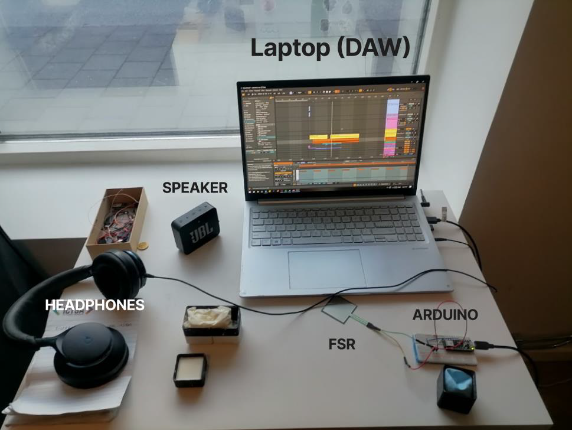
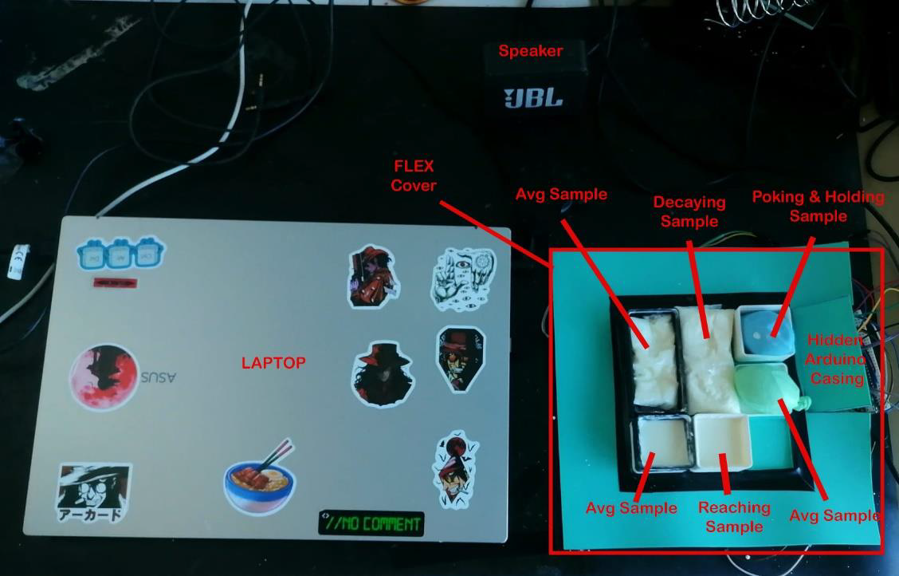
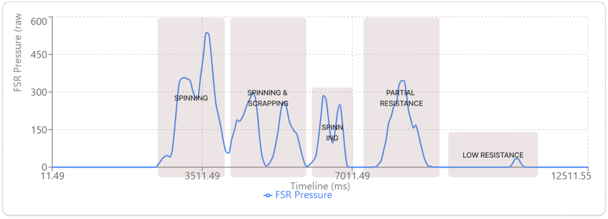
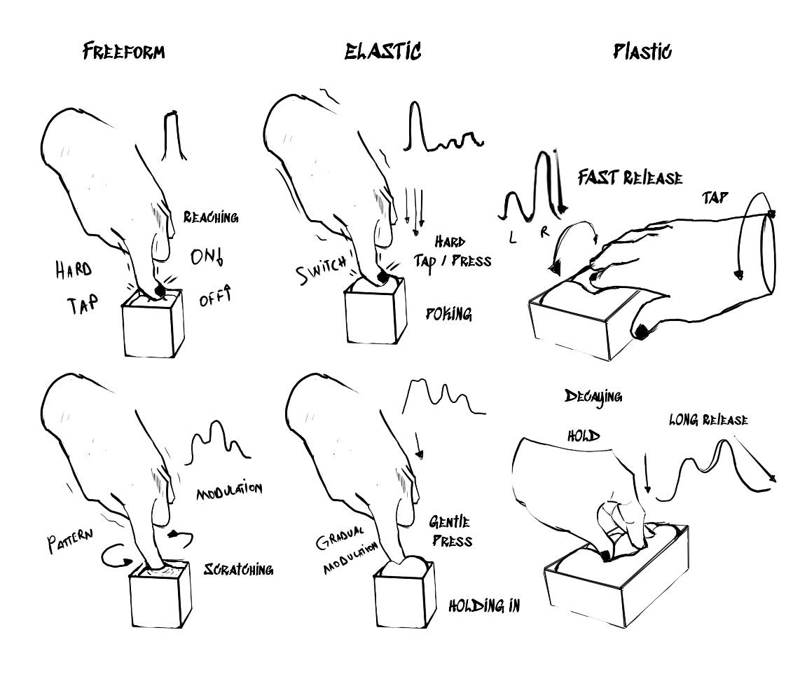

Non-linear Kinesthetic Feedback with Oobleck in Audio Production
Type: Bachelors Thesis Project
Possible Applications: Interactive Sound Design, Sonic Art Installation, Digital Foley and Music Instruments in Post-Production
Role: Development, Sketching, Prototyping, Research
Team: Individual
Tools & Libraries: C++, Python, Arduino IDE, Control Surface library, Oobleck, Force-Sensitive Resistor (FSR), Ableton Live 12
Overview
Digital audio interfaces often represent sound visually, leaving the physical controller with limited tactile feedback. This thesis investigates Oobleck, a shear-thickening mixture of cornstarch and water, as a tangible interface between a person's gestures and sonic transformations.
The project explores how Oobleck's changing resistance can make sound manipulation physical and expressive. Rather than treating the material as a conventional, stable controller, the work studies its changing states and how those states shape the relationship between gesture, touch, and sound.

Aim and Objectives
The aim was to explore whether Oobleck's non-linear physical feedback could support expressive interaction with sound, and how different material constructions influence that experience.
Project objectives:
01. Explore how gestures and Oobleck's liquid-to-solid response relate to sonic change.
02. Compare freeform Oobleck with elastic and plastic containment surfaces.
03. Prototype and evaluate a pressure-sensitive tangible interface for audio post-production.
04. Use participant feedback to identify useful interaction qualities and material limitations.
Research Approach
The project used a research-through-design process, combining material-driven and interaction-driven design. Prototypes were developed and tested across two iterative cycles. Think-aloud sessions and participant descriptions helped capture how the material felt, how people interacted with it, and how they interpreted the resulting sound.
Seven music students and producers took part across two testing sessions. The prototypes explored freeform, elastic-covered, and plastic-covered Oobleck. Participants focused on listening and interacting with the material, helping reveal how the physical setup shaped their gestures and sonic expectations.
Prototype and Technical Setup
A force-sensitive resistor (FSR) beneath the Oobleck container captured pressure. An Arduino Nano 33 BLE and the Control Surface library translated sensor readings into MIDI Control Change values. The sensor range was mapped from 0-4019 to the MIDI CC range of 0-127.
The MIDI data controlled four effects in Ableton Live 12, allowing participants to transform existing audio. A later prototype explored a six-input arrangement, combining mappings for different material samples with digital interaction sketches.
Tools: Oobleck (cornstarch and water), FSR pressure sensing, Arduino Nano 33 BLE, Control Surface library, MIDI CC, Arduino IDE Serial Plotter, and Ableton Live 12.

Prototype Demonstration
Do you want to know more?
Prototype Process
Oobleck's behavior initially was somewhat predictable, but it changed over time as the cornstarch and water mixture settled and the water evaporated.
Thus, I had to change my approach to account for these dynamic properties. Where I had to take in account how the sensor readings would change over time and vary when interacting with the material samples.
Therefore, the each sample was analyzed individually to capture its affordances given to participants, how the material responded in relation for the pressure sensor and also how the surface properties influenced the interaction.
This led to devided responses across different samples, which resulted on building a program that plots the data while also transforming it for each MIDI input.

For example, in this instance (Elastic Oobleck Sample), the data shows different gestural patterns, received by the sensors while interacting with the sample. What is more interesting is that difference in forces, oscilations on the input and pressure times can be encapsulated in their own gestural profiles.
Therefore in the second cycle of the design process, I refined the approach to better capture these dynamic interactions and formulate metaphors in relation to the material's behavior.

Key Findings
Participants connected the material's changing resistance to changes in sound. Applying sudden force made the Oobleck resist movement and supported abrupt sonic transformations, including sharp panning changes. Gentle, sustained gestures kept the material more fluid and supported continuous modulation.
The containment surface shaped the interaction: freeform Oobleck provided rich direct tactile feedback but could feel sticky and unpredictable, while elastic and plastic covers filtered some of that contact and emphasized other qualities, such as resistance and force feedback. Participants generally saw the prototypes as tools for transforming existing audio rather than generating sound from scratch, pointing toward post-production and sound-design workflows.
Challenges and Limitations
Oobleck's behavior changed over time as water evaporated and cornstarch settled. This affected consistency, transition speed, and sensor readings, making the interface less predictable across longer sessions. Its binding quality could also make it difficult for users to release or reposition their fingers.
The tested setup relied primarily on pressure sensing, which limited the range and spatial complexity of detectable gestures. The results are exploratory and reflect a small participant group; they do not establish a stable, general-purpose controller; but it coveres a big range of possibilities.
Future Work
Future iterations could investigate ways to slow material decay, use multiple sensors across a larger surface, and explore capacitive sensing alongside pressure. Further studies with sound designers, foley artists, and mixing engineers could test how the interface fits professional post-production practice.